Jetpack Compose 3 Text
[TOC]
Compose 提供了基础的 BasicText 和 BasicTextField，分别用于显示文字及处理用户输入的主要函数。如果需要自定义可以重写以上两个函数
Compose 提供了高级的 Text 和 TextField，也是用于显示文字和输入框的可组合函数，是遵循 Material Design 设计的函数，推荐使用；
Text
@Composable
fun SimpleText() {
Text("hello world!")
}
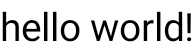
字符串资源
@Composable
fun SimpleResourceText() {
Text(stringResource(id = R.string.hello_world))
}
文字颜色
@Composable
fun SimpleText() {
Text("Hello World!", color = Color.Blue)
}
字号
@Composable
fun SimpleText() {
Text("Hello World!", color = Color.Blue, fontSize = 30.sp)
}
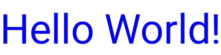
斜体
@Composable
fun SimpleText() {
Text("Hello World!",
color = Color.Blue,
fontSize = 30.sp,
fontStyle = FontStyle.Italic
)
}
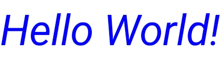
粗体
@Composable
fun SimpleText() {
Text("Hello World!",
fontWeight = FontWeight.Bold
)
}
对齐
通过 textAlign 参数，设置文字的对齐方式
默认情况下，Text 会根据其内容值选择自然的文字对齐方式：
- 对于从左到右书写的文字，如拉丁语、西里尔文或朝鲜文，向 Text 容器的左边缘对齐
- 对于从右到左书写的文字，如阿拉伯语或希伯来语，向 Text 容器的右边缘对齐
@Composable
fun SimpleText() {
Text("Hello World!",
textAlign = TextAlign.Center,
// 宽度 150dp
modifier = Modifier.width(150.dp)
)
}
推荐使用
TextAlign.Start和TextAlgin.End，而不是TextAlgin.Left和TextAlign.Right; 系统可以根据具体语言的首选文字方向解析 Text 的对齐；TextAlign.End对于法语文字将向右侧对齐，而对于阿拉伯语文字将向左侧对齐；但无论对于哪种文字，TextAlign.Right都将向右侧对齐
字体
通过 fontFamily 参数设置字体
@Composable
fun SimpleText() {
Text("Hello World!",
fontFamily = FontFamily.Cursive
)
}
使用 fontFamily 属性来处理 res/fonts 文件夹中定义的自定义字体和字型
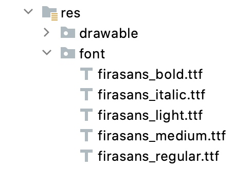
val firaSansFamily = FontFamily(
Font(R.font.firasans_light, FontWeight.Light),
Font(R.font.firasans_regular, FontWeight.Normal),
Font(R.font.firasans_italic, FontWeight.Normal, FontStyle.Italic),
Font(R.font.firasans_medium, FontWeight.Medium),
Font(R.font.firasans_bold, FontWeight.Bold)
)
最后，您可以将此 fontFamily 传递给 Text 可组合项。由于 fontFamily 可以包含不同的粗细度，因此您可以手动设置 fontWeight 来为您的文字选择合适的粗细度：
Column {
Text(..., fontFamily = firaSansFamily, fontWeight = FontWeight.Light)
Text(..., fontFamily = firaSansFamily, fontWeight = FontWeight.Normal)
Text(..., fontFamily = firaSansFamily, fontWeight = FontWeight.Normal,
fontStyle = FontStyle.Italic)
Text(..., fontFamily = firaSansFamily, fontWeight = FontWeight.Medium)
Text(..., fontFamily = firaSansFamily, fontWeight = FontWeight.Bold)
}
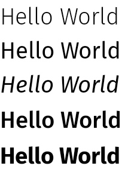
多种样式
Text 可组合函数可以设置不同的样式，比如：部分文字下划线，改变字体，颜色，字号等，使用 AnnotatedString，类似于 TextView 的 SpannableStringBuilder；
AnnotatedString 是一个数据类，其中包含：
- 一个
Text值 - 一个
SpanStyleRange的 List，等同于位置范围在文字值内的内嵌样式 - 一个
ParagraphStyleRange的 List，用于指定文字对齐、文字方向、行高和文字缩进样式
TextStyle 用于 Text 可组合项，而 SpanStyle 和 ParagraphStyle 用于 AnnotatedString。
SpanStyle 和 ParagraphStyle 之间的区别在于，ParagraphStyle 可应用于整个段落，而 SpanStyle 可以在字符级别应用。一旦用 ParagraphStyle 标记了一部分文字，该部分就会与其余部分隔开，就像在开头和末尾有换行符一样。
@Composable
fun MultipleStylesInText() {
Text(buildAnnotatedString {
withStyle(style = SpanStyle(color = Color.Green)) {
append("H")
}
append("ello ")
withStyle(style = SpanStyle(fontWeight = FontWeight.Bold, color = Color.Red)) {
append("W")
}
append("orld")
})
}
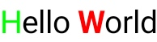
@Composable
fun ParagraphStyle() {
Text(buildAnnotatedString {
withStyle(style = ParagraphStyle(lineHeight = 30.sp)) {
withStyle(style = SpanStyle(color = Color.Blue)) {
append("Hello\n")
}
withStyle(style = SpanStyle(fontWeight = FontWeight.Bold,
color = Color.Red)) {
append("World\n")
}
append("Compose")
}
})
}
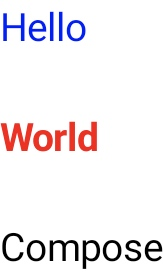
行数上限
@Composable
fun SimpleText() {
Text("Hello World! ".repeat(30),
maxLines = 2
)
}
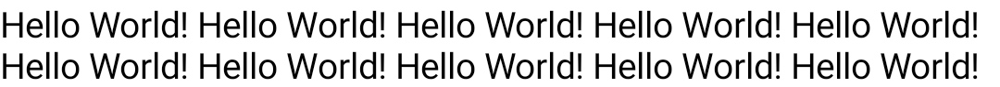
文字溢出
@Composable
fun SimpleText() {
Surface(color = Color.LightGray) {
Text("Hello World! ".repeat(30),
maxLines = 2,
overflow = TextOverflow.Ellipsis
)
}
}
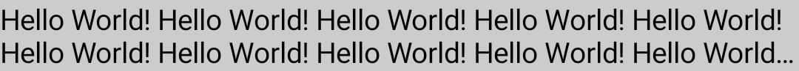
选中文字
默认情况下，可组合项不可选中，如需启动，使用 SelectionContainer 修饰
@Composable
fun SelectableText() {
SelectionContainer {
Text("This text is selectable")
}
}
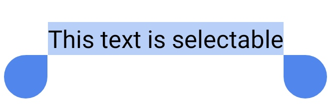
可选择区域的特定部分停用选择功能
要执行此操作，您需要使用 DisableSelection 可组合项来封装不可选择的部分：
@Composable
fun PartiallySelectableText() {
SelectionContainer {
Column {
Text("This text is selectable")
Text("This one too")
Text("This one as well")
DisableSelection {
Text("But not this one")
Text("Neither this one")
}
Text("But again, you can select this one")
Text("And this one too")
}
}
}
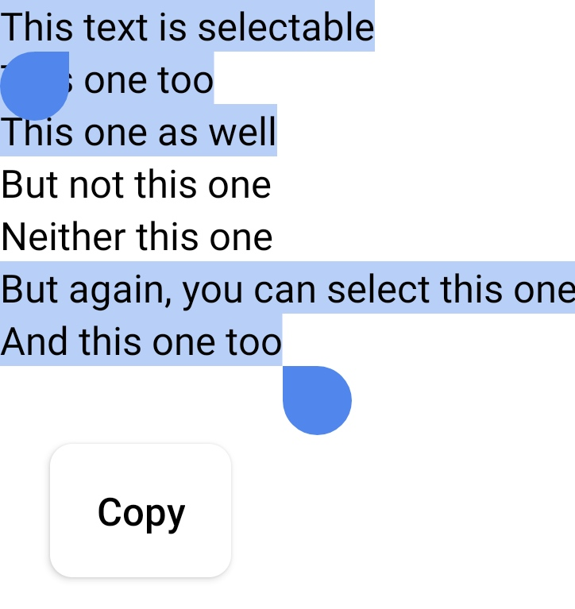
TextField
TextField 允许用户输入和修改文字；分为两类
TextField是Material Design实现。我们建议您选择此实现，因为它遵循的是 Material Design 指南- 默认样式为填充
OutlinedTextField是轮廓样式版本
BasicTextField允许用户通过硬件或软件键盘编辑文字，但没有提供提示或占位符等装饰。
@Composable
fun SimpleFilledTextFieldSample() {
var text by remember { mutableStateOf("Hello") }
TextField(
value = text,
onValueChange = { text = it },
label = { Text("Label") }
)
}
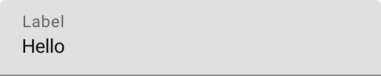
@Composable
fun SimpleOutlinedTextFieldSample() {
var text by remember { mutableStateOf("") }
OutlinedTextField(
value = text,
onValueChange = { text = it },
label = { Text("Label") }
)
}
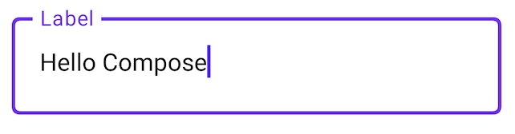
键盘选项
@Composable
fun PasswordTextField() {
var password by rememberSaveable { mutableStateOf("") }
TextField(
value = password,
onValueChange = { password = it },
label = { Text("Enter password") },
visualTransformation = PasswordVisualTransformation(),
keyboardOptions = KeyboardOptions(keyboardType = KeyboardType.Password)
)
}
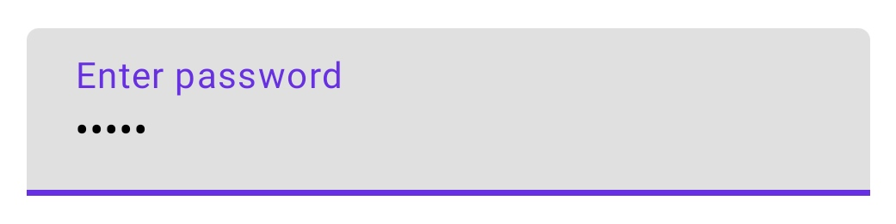